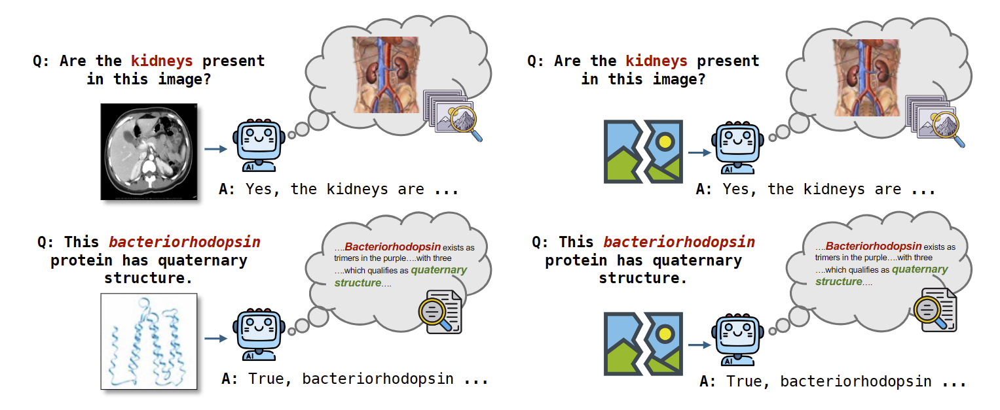

Vision-language models are often evaluated by whether they answer image-based questions correctly. However, VLMs can produce confident, often correct answers to visual questions even when no image is provided, a behavior known as mirage. We study whether that same mirage behavior leaves a detectable signature inside the model even when images are provided.
We introduce Mirage Probes, a contrastive probing framework for diagnosing these behaviors at the representation level. Across open-source VLMs and multiple VQA benchmarks, we find that mirage-associated generations are linearly decodable from image-present activations, including residual stream, MLP, post-attention, and attention-head sites. Thus, we empirically demonstrate that mirage mechanisms can still activate regardless of the presence of visual input.
Our findings indicate that mirage behavior is not a single failure mode. Some mirages appear to come from textual biases, where the question alone gives the model enough distributional evidence to answer without using the image. Others appear to come from spurious images, where the model behaves as though unsupported visual content exists in its latent representations. This distinction matters because the two mechanisms imply different fixes: cleaning benchmark text distributions may reduce textual shortcuts, but it is unlikely to eliminate mirages that arise from the creation of spurious images.